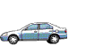

|
 previous / next column
A PHYSICIST WRITES . . .
(June 2003)
Last month we looked at how the accuracy of your odometer depends on the state of your tyres. I concluded that the accuracy depends hardly at all on whether you keep the tyre pressures correct, but it will shift by about 2% during the tread-life of the tyres (the ones on the driving wheels, that is).
It is interesting to compare the odometer and the speedometer as measuring instruments. In not-so-modern cars, at least, they are both driven by a cable that turns in proportion to the wheel rotation. The odometer is coupled directly to the cable, so it's unlikely that it can be fine-tuned to improve its accuracy. Yet I have always found odometers to be correct to within about 2% of the actual mileage. Full marks to the manufacturers, then, especially when you consider the effect of tread wear.
In contrast, the traditional speedometer needle is pulled round "loosely" by a magnetic linkage, and so you might expect an adjustment to be possible for getting the reading just right. But every speedo I have checked has indicated between 5% and 10% above the true speed. Perhaps there is a basic difficulty in manufacturing for accuracy.
Certainly the regulations are confusing! When a speedometer is first approved for a new car, it can be designed to read up to 10% above the true speed plus 4 kph. But then when the speedo is actually manufactured and fitted, it must read within 5% above true speed plus 10 kph.
Anyway, the outcome is that you may not be driving as close to the speed limit as you think you are. On the other hand a speedometer must legally not read below the true speed, so at least you will never break the limit unknowingly.
A digital outside-temperature gauge (if you possess one) is a different sort of instrument again. Give me a quick answer to this question: suppose you notice the reading switching from 20C to 21, and then soon afterwards from 21 to 22 - how much has the temperature gone up by, altogether? Two degrees, of course.
Wrong! It has risen from just below 21C to just above 22, hardly more than one degree. Maybe the actual temperatures were all higher or lower, because there is no guarantee that the temperature sensor is accurate, but the increase was still only about one degree. Many digital read-outs can mislead you like this when you see them flicking from one value to the next - you think that the size of the change was a whole unit, but in fact it was practically zero (at the time).
Curiously, the most accurate number probably available to you as you drive is not usually visible. I'm referring to the frequency the radio is tuned to, which (on my radio anyway) is nearly always overwritten by the name of the station. The frequency only appears when you are doing a search or when you are listening to the MW or LW band. This is because they haven't bothered to invent a way of transmitting the station name on these bands.
But now I feel that I am distracting your attention too much from the road ahead, so I will stop.
Peter Soul
previous / next column
|